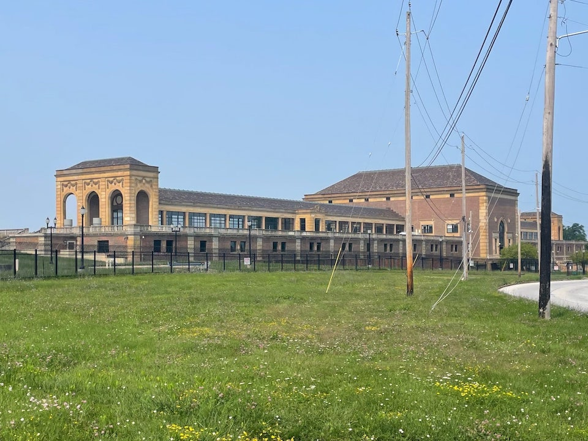

The schools where my brothers and I went for K-4 and 5-6 were on the same gigantic city block, bordered at the northeast corner by Doan Brook. This little creek was mostly important to us because when we would sled down the hill there during winter, almost ending up in the creek meant you had a good run. If I ever walked the long way home from school, the road would go over the creek and once or twice I scrambled down the bank to investigate the little tunnel it took. This was around the time I had to read Hatchet for class, so I started imagining a similar story about the boy who lived in the creek tunnel under the road. He kept his pencil and notebook in a ziploc bag to keep it from getting wet. He didn’t hunt rabbits for food, despite there being many rabbits around that creek. I think he stole cereal from a nearby house.
I got my learner’s permit at 15½, license at 16, and did occasionally drive one of our family’s two minivans while I was still in high school, but for the majority of my time before going to college, I rode a bike everywhere. My budget-conscious parents bought a handful of stolen-and-unclaimed bikes at a police auction once, so there was always one available. Whether with friends or alone, I’d tackle the many dirt trails through city parks, down hills, by the creek, progressing from young-boy-survives-the-wilderness-alone daydreams to avoiding cracks in the sidewalk. Not the traditional ones between panes, you can’t avoid those on a bike unless you bunny hop every half second. All other cracks were like enemy lasers and my bike was a spaceship. What I’m saying is, I grew up on the nature trails in and around Shaker Heights, usually on a bike.
When I was in sixth grade, a kid at school ran away from home in the middle of the night. He was on his bike somewhere in downtown Cleveland early the next morning when he was hit by a truck and died. Among the shock and the sadness, I remember being so impressed that he made it that far on a bike. We only ever took the train into Cleveland to watch a movie at the mall or go to a baseball game, and that felt like it took forever, each way, on a freaking train. Or, when our family would drive to the airport, that also felt like it took forever, and that was in a car, on the highway. Years later, someone else in my class did their senior project on Doan Brook, and how its watershed starts somewhere near Shaker’s eastern boundary, and it weaves its way through town and indeed through Cleveland to empty out into Lake Erie. And that was when I finally realized this little creek near my school was a direct link to the big city.
Baldwin Reservoir, where all my childhood poop and pee was flushed
It’s been almost 20 years since I graduated from high school, which is frankly absurd and should not be allowed. Nevertheless, today I started a little farther east from where Doan Brook begins, and skateboarded to where it meets Lake Erie, something that only became possible recently. The first couple miles were on a network of smoothly paved trails in the median of Shaker Boulevard, at least until the train line took over. Then it merged into a sequence of trails that follows the creek downtown. After a scary big downhill and one of the most confusing traffic intersections in all of Cleveland (during which the creek is culverted below the roads), the creek meanders through a collection of cultural gardens.
I reached the lake and took a few photos, then opened Lyft to see how much a ride back home would cost. It was almost $30 and estimated to take an hour and a half, pretty much as long as it took me to go that far on my own. So instead I rode along the shoreline, past the Rock & Roll Hall of Fame, to the main train station downtown. I got a ticket and rode the green line back, the same as when I saw Blue Streak at the theater. That movie came out in 1999.